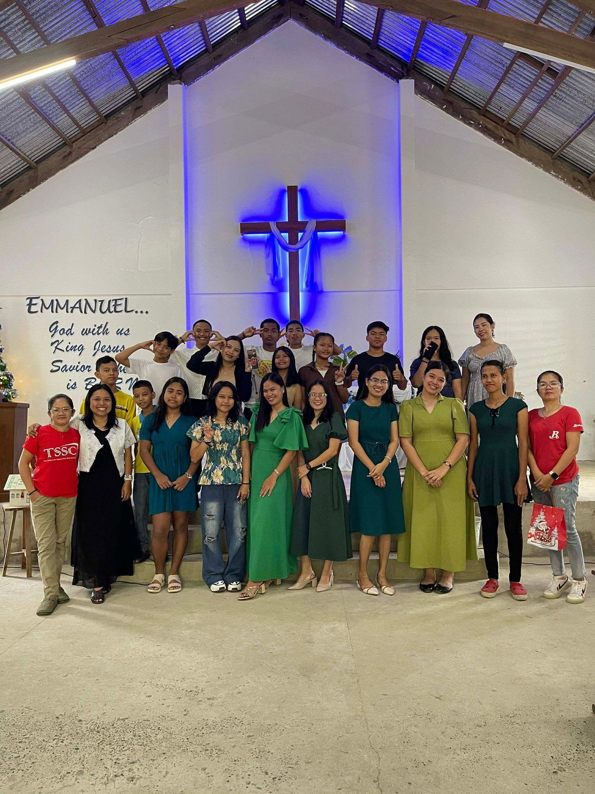
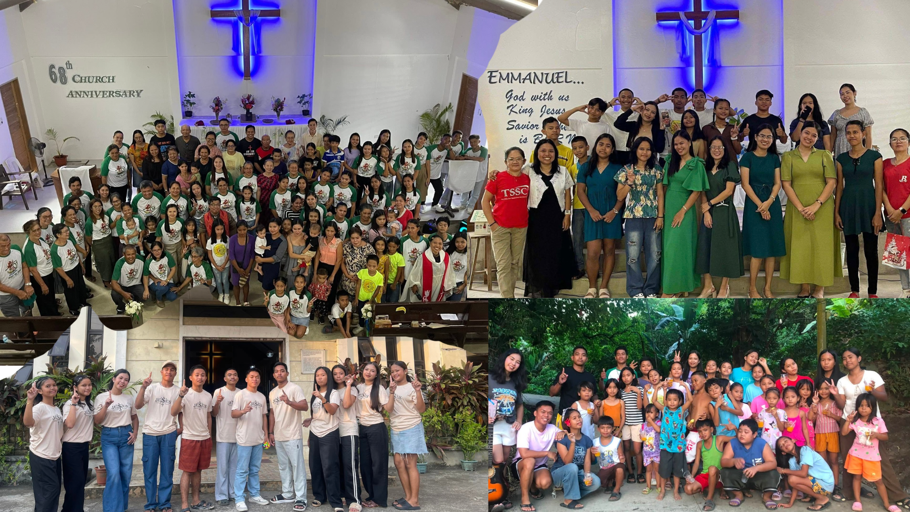

Church Photo Gallery
Moments from our worship, fellowship, and outreach.




Welcome to UCCP Cabay A community of faith, love, and service. Welcome to UCCP Cabay! We are a church family committed to following Christ, growing in faith, serving others, and sharing God’s love. Come worship, connect, and grow with us!
Read Our Story"“For where two or three are gathered in my name, there am I among them.” Matthew 18:20
Moments from our worship, fellowship, and outreach.
